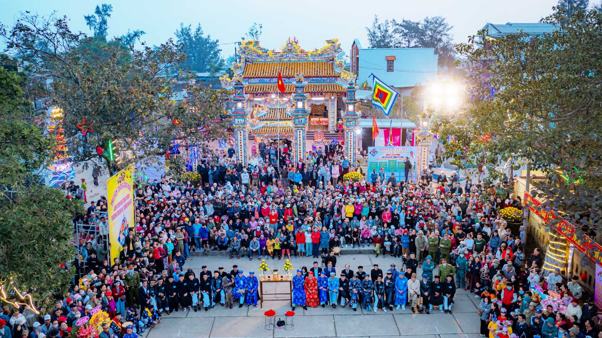

🎣 Lễ Hội Cầu Ngư
📍 Địa điểm: Các làng chài ven biển TP Huế
🕒 Thời gian tổ chức: Thường vào đầu năm âm lịch
🎫 Giá vé: Miễn phí
📖 Giới thiệu
Lễ hội Cầu Ngư là một trong những lễ hội truyền thống đặc sắc của cư dân vùng biển Huế. Đây là dịp để ngư dân bày tỏ lòng biết ơn đối với thần biển, cầu mong mưa thuận gió hòa, sóng yên biển lặng và những chuyến ra khơi thuận lợi, đánh bắt được nhiều tôm cá.
Lễ hội thường được tổ chức tại các làng chài ven biển như Thuận An, Lăng Cô hay các vùng ven phá Tam Giang. Đây không chỉ là hoạt động tín ngưỡng dân gian mà còn thể hiện nét đẹp văn hóa cộng đồng gắn liền với nghề biển của người dân xứ Huế.
⚠️ Lưu ý
🙏 Tôn trọng nghi lễ truyền thống của địa phương.
🚯 Giữ vệ sinh chung tại khu vực lễ hội.
📷 Chụp ảnh văn minh, không làm ảnh hưởng nghi lễ.
👥 Giữ trật tự nơi đông người.
🏯 Hoạt động nổi bật
● Lễ cúng thần biển: Cầu cho mùa biển thuận lợi.
● Rước thuyền, rước sắc: Mang đậm nét tín ngưỡng dân gian.
● Múa bả trạo: Loại hình diễn xướng truyền thống của ngư dân.
● Các trò chơi dân gian: Tạo không khí vui tươi, sôi động.
● Giao lưu văn nghệ: Ca hát và biểu diễn cộng đồng.
📸 Gợi ý tham quan
● Nên đến sớm để xem đầy đủ nghi lễ.
● Tìm hiểu văn hóa làng chài địa phương.
● Chụp ảnh các đoàn rước và múa bả trạo.
● Thưởng thức hải sản tươi ngon gần khu lễ hội.